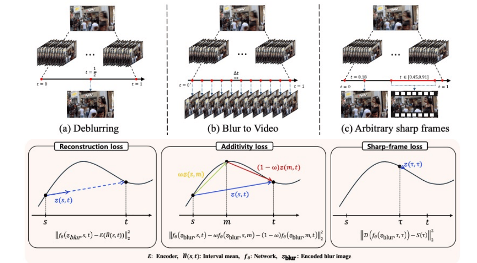
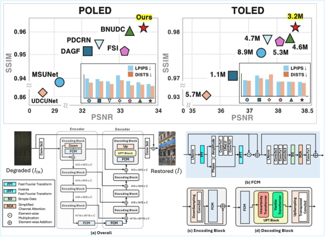
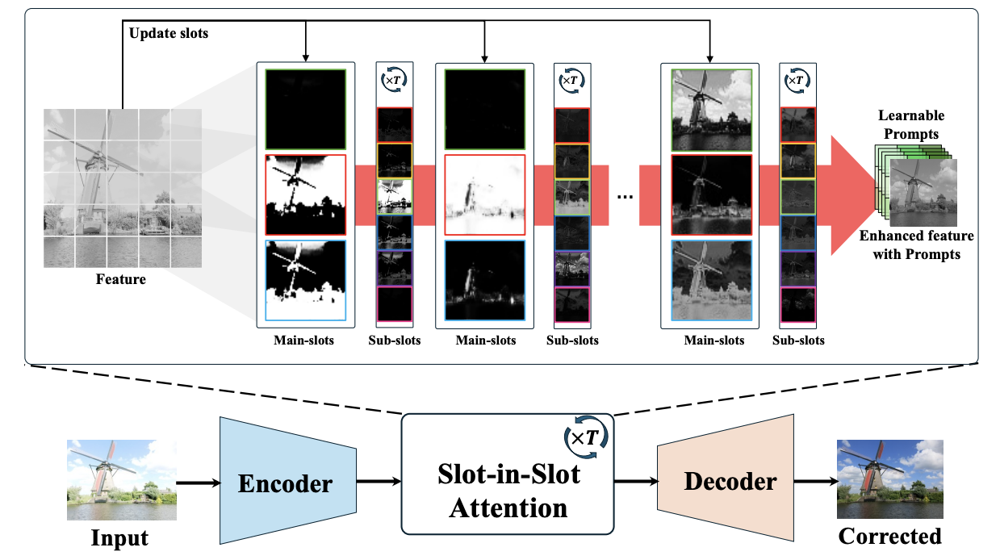
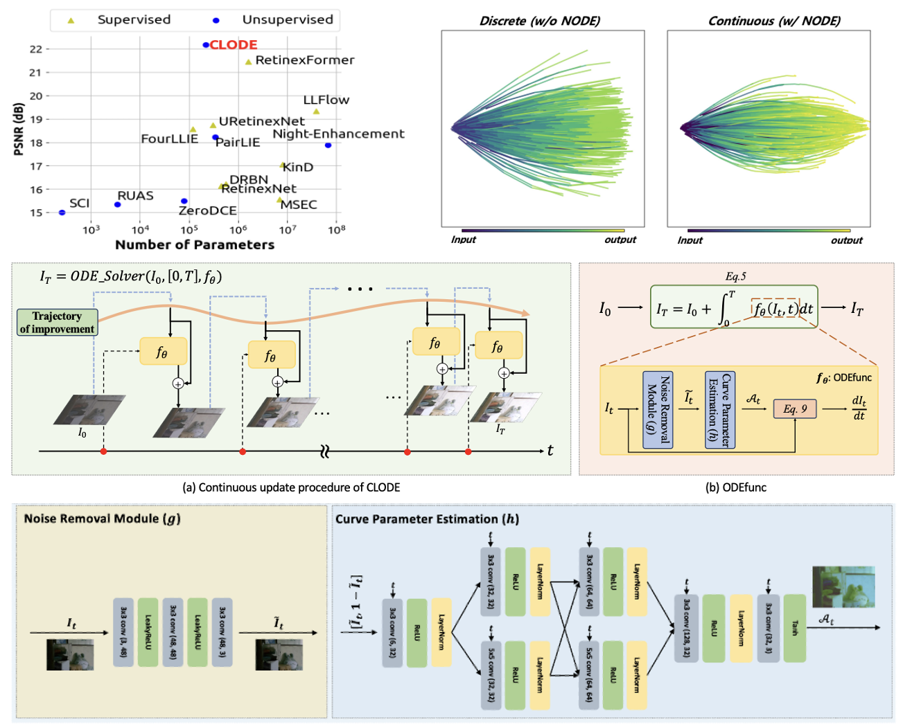
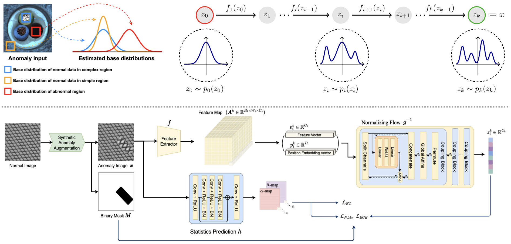

About
I recently received my Ph.D. under the supervision of Prof. Tae Hyun Kim. My research focuses on restoring and enhancing images and videos degraded by sub-optimal capture conditions, with the broader goal of turning any capture into a good photo. I approach this problem from three directions: designing task-specific network architectures, formulating restoration as an inverse problem, and leveraging generative models.
What makes a photo good, however, depends on who is looking at it. While much of my work has focused on visual quality for human viewers, I am increasingly interested in enhancement for machines: improving images so that downstream vision models can perceive and act on them more reliably. If you are interested in collaboration, feel free to contact me!
News
- PickMoment was accepted to NeurIPS 2026.
- UCMNet was accepted to CVPR 2026.
- Received my Ph.D. from Hanyang University, advised by Prof. Tae Hyun Kim.
- Received the Samsung Electronics Mobile eXperience (MX) Research Scholarship.
- Exposure-slot was accepted to CVPR 2025.
- CLODE was accepted to ICLR 2025 as a Spotlight.
- Started as a visiting research student at Toronto Metropolitan University (TMU), hosted by Prof. Guanghui Wang.
- SANFlow was accepted to NeurIPS 2023.
Publications
Computer Vision

Recovers sharp frames at arbitrary continuous time instants from a single blurry image by jointly learning deblurring and blur-to-video generation.

A lightweight network that performs uncertainty-aware adaptive processing to restore high-frequency details in regions with varying UDC degradations.

A prompt-based slot-in-slot attention mechanism that clusters exposed feature regions to learn exposure-centric features.

Formulates low-light enhancement as a continuous system with Neural ODEs, enabling stable curve-based exposure correction without sensitivity to iteration count.

Maps features to diverse distributions based on semantic location, improving discrimination between normal and abnormal patterns.
Medical AI
-
Prediction of Retinopathy of Prematurity and Treatment in Very Low Birth Weight Infants Using Machine Learning on Nationwide Non-Imaging Clinical Data
Neonatology, 2026
-
Machine learning-based analysis for prediction of surgical necrotizing enterocolitis in very low birth weight infants using perinatal factors: a nationwide cohort study
European Journal of Pediatrics, 2024
-
Learning-Based Longitudinal Prediction Models for Mortality Risk in Very-Low-Birth-Weight Infants: A Nationwide Cohort Study
Neonatology, 2023
-
Two-stage learning-based prediction of bronchopulmonary dysplasia in very low birth weight infants: a nationwide cohort study
Frontiers in Pediatrics, 2023
-
Development of artificial neural networks for early prediction of intestinal perforation in preterm infants
Scientific Reports, 2022
* Equal contribution
Academic Service
- Conference Reviewer: CVPR (2025–present), NeurIPS (2025–present), AAAI (2026–present), ECCV (2026), WACV (2026), ICLR (2027)
- Outstanding Reviewer: CVPR (2026), ECCV (2026)